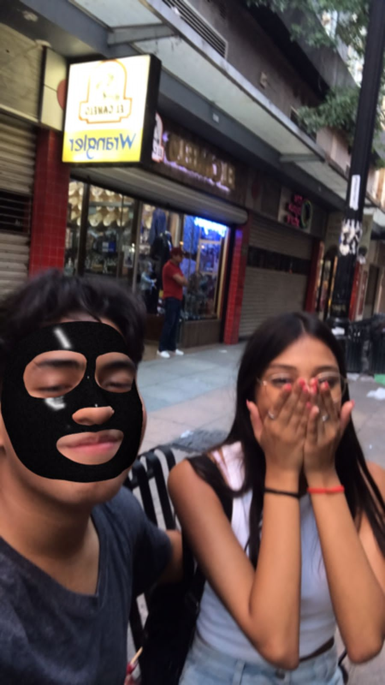
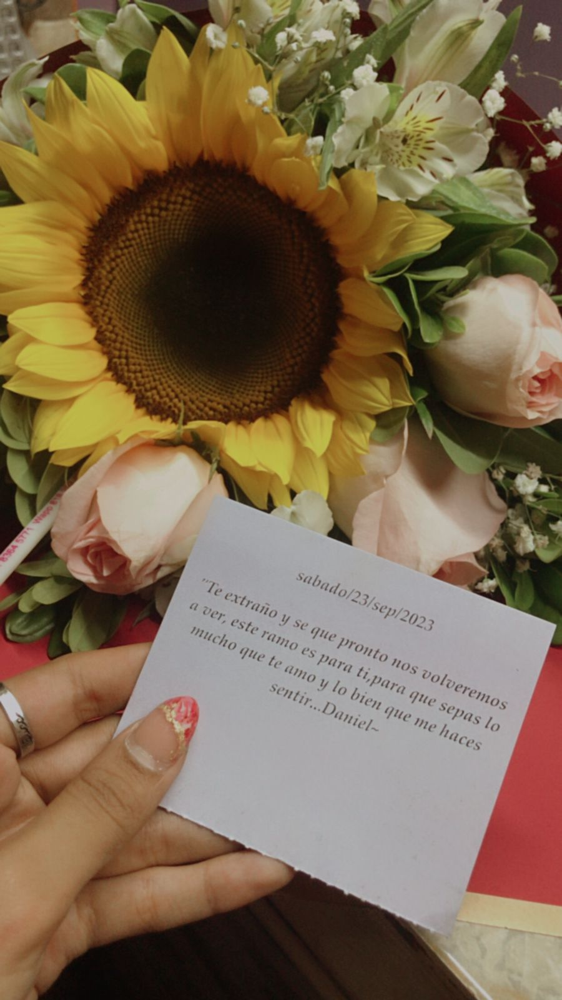
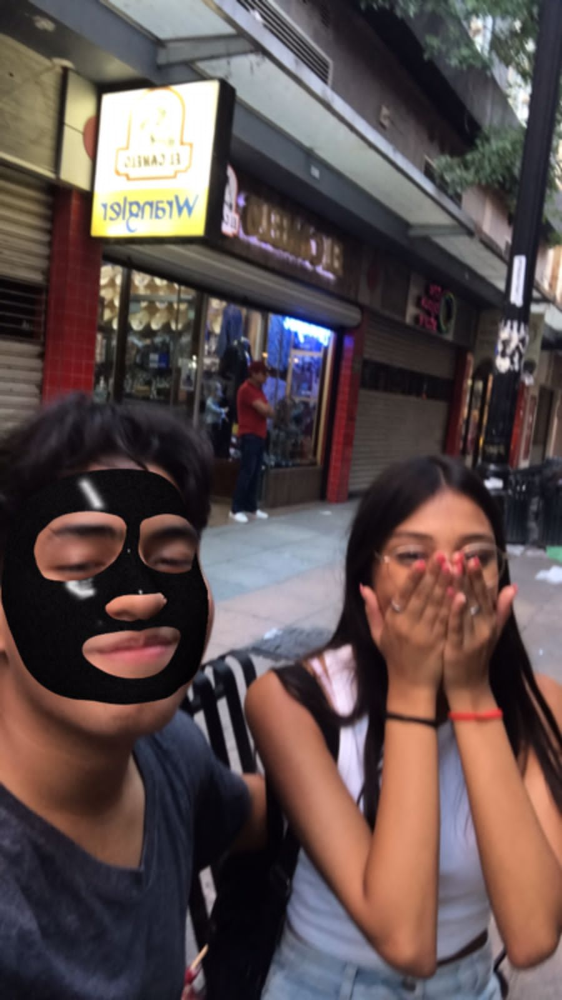
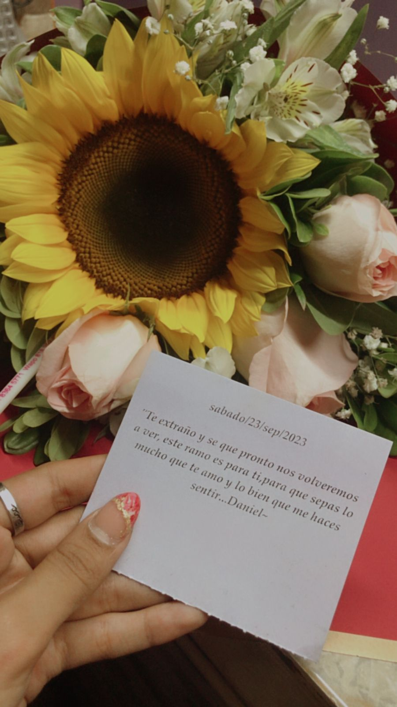

Cuarto mes
Este cuarto mes que celebramos con mucho amor en las fiestas navideñas, tambien fue muy oscuro para mi, aquí fue donde nuestros enojos explotaron, y aun que me sentí muy solo este mes quiero decir que yo te sigo y te seguí amando, que te prometi que nunca iba a dejarte, y a pesar de que si hice las cosas mal, gracias por perdonarme. Este mes vuelve a ser el comienzo de lo nuestro, vuelve a ser el comienzo de nuestro amor y aunque al principio no era lo mismo, conforme iba pasando el tiempo volvíamos a construir lo que teniamos, este mes significó muchas cosas para mi y me dió el entendimiento de poder conocerte un poco más a pesar de los momentos oscuros que pasamos, siempre seguía sintiendo la misma conexión contigo
Cada día me encantas mucho más mi corazón
 



Viendo para atrás estos 4 meses, me doy todavía más cuenta de que eres el amor de mi vida, que nada ni nadie me va a separar de ti, que estoy destinado a estar contigo, y que siempre te amaré cada día más, por que no importa si hay días malos, días buenos, días oscuros o días muy brillosos, mi amor por ti siempre seguirá creciendo, por que eres mi todo.